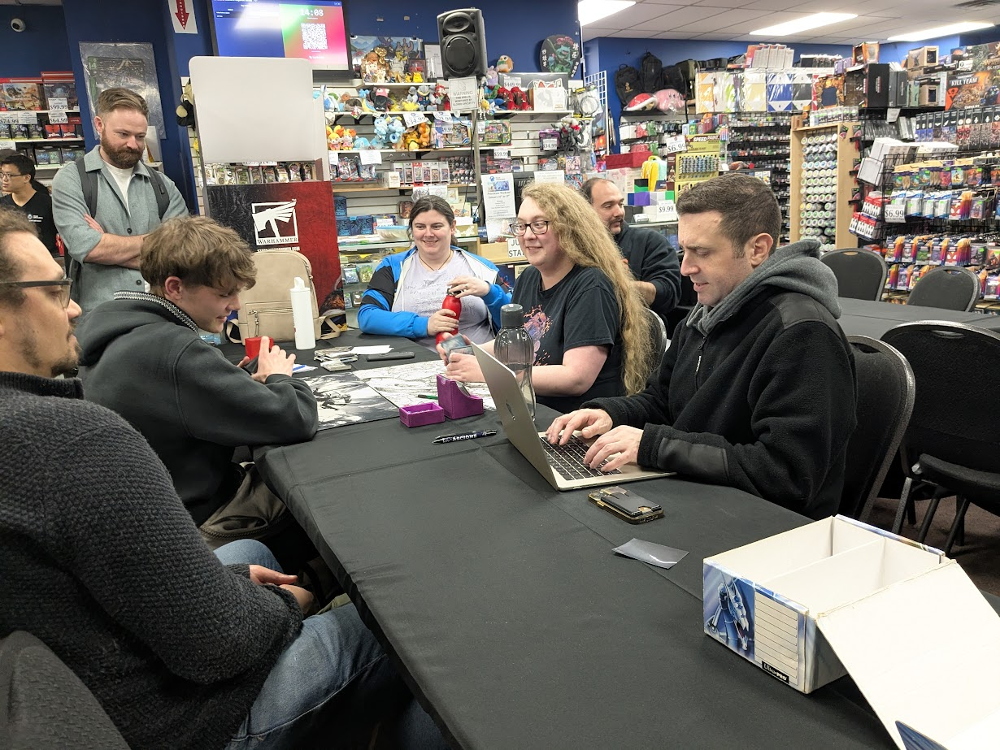
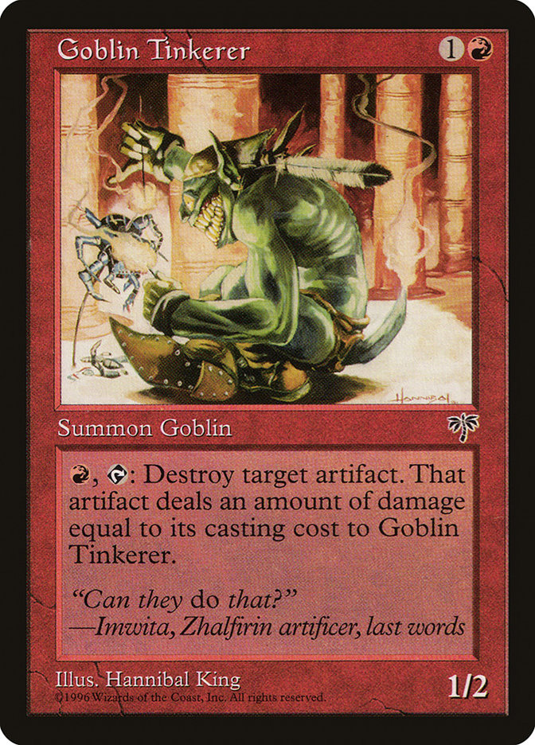
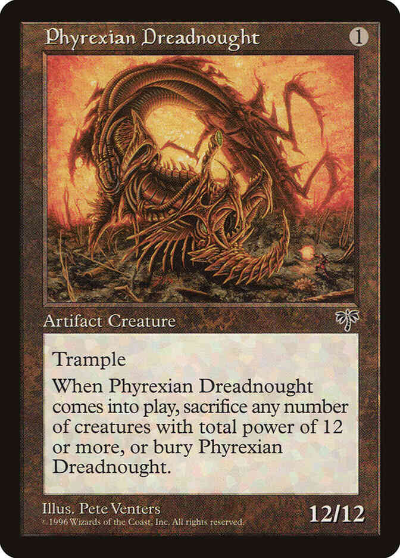
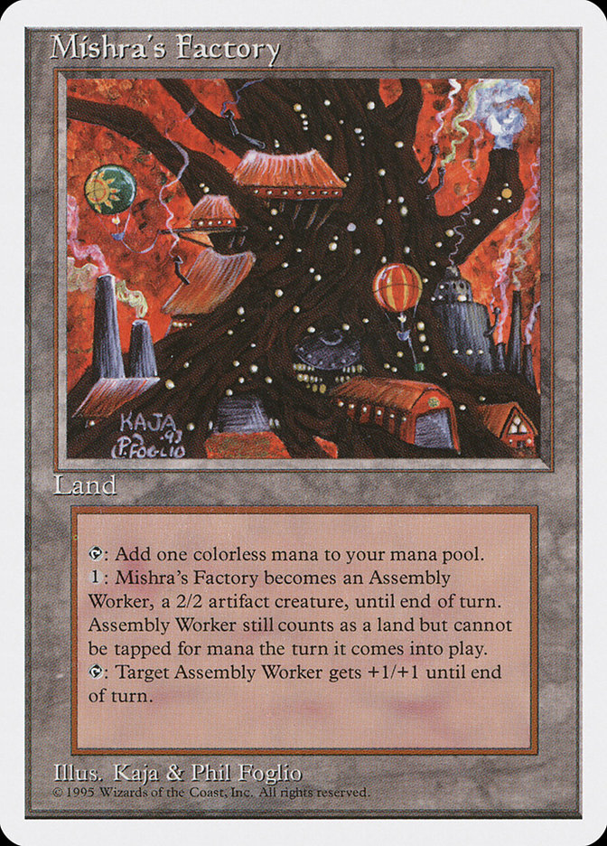
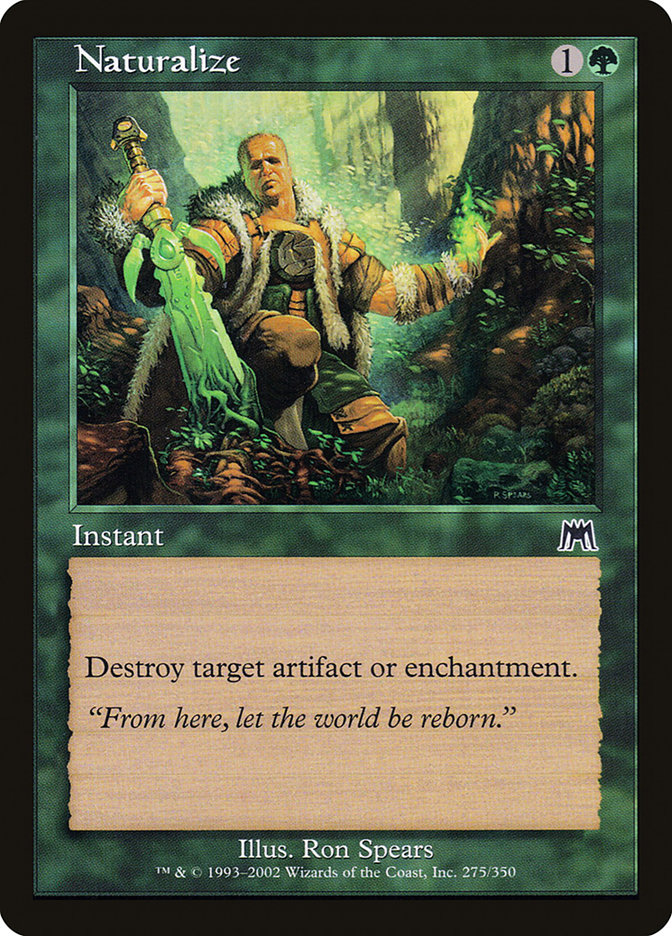
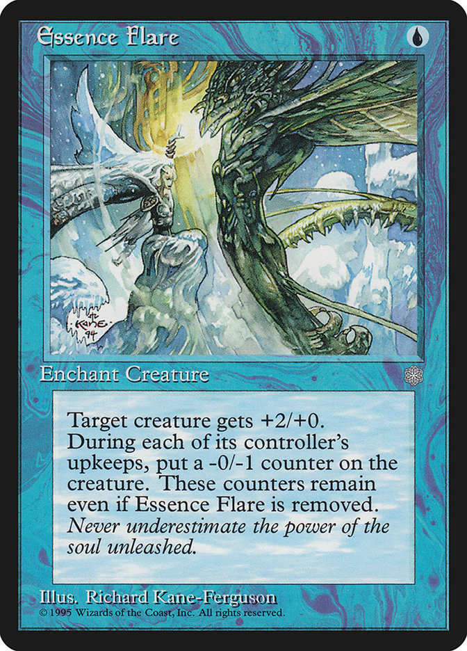
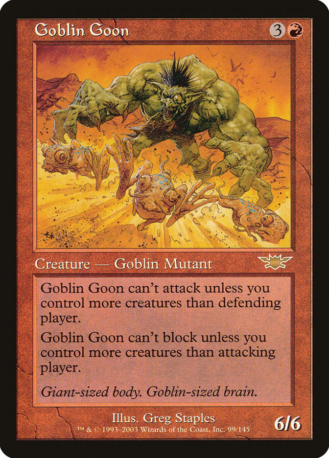

Caitlyn Bethune (Goblins) vs Andrew Kidson (Nought)

These two players—both still with immaculate 6-0-1 records—represented the two camps that characterized the tournament.
Bethune, a cross-format Goblins specialist, is one of the regulars among Vancouver’s established Premodern community: a casual-competitive playgroup at the centre of a Legacy, EDH, and Pauper Venn diagram.
Kidson, on the other hand, represented Vancouver’s storied grinder tradition. No specialization per se—just ready and willing to pick up any deck, any format, if the prize is right. It was his first Premodern tournament, but not his first rodeo. At just 19 he’d already been to a handful of Pro Tours.
In truth, everyone was in good humour. Fung had been sharing stories of PT yore with the young padawan all day.
They’d talked about what would have happened if they’d played in the finals.
Who would win? Would they crack the pack?
“I’d shred it,” Fung said.
Kidson wasn’t so sure.
“When was your first Pro Tour?” I’d asked him earlier.
“OTJ.”
“OTJ?”
“Outlaws of Thunder Junction.”
“Oh, I thought you meant Odyssey Torment Judgement.”
In the end, only Kidson made it through.
With the Sealed Legends Pack on the line, the atmosphere took on some of the hushed seriousness of a PTQ finals.

Bethune was 1st seed, and chose the play.
Game 1 —
Bethune opens on:
Wooded Foothills; Wooded Foothills; Wasteland; Goblin Tinkerer; Goblin Matron; Goblin Warchief; Goblin Warchief.
A considered pause. Keep.
Kidson, meanwhile, takes a trip to Paris*, then keeps.
They trade land-drops, and then on turn 2 Bethune plays Goblin Tinkerer—an underplayed oddball from Mirage, gaining format fashionability specifically for this matchup. The Tinkerer can dismantle Dreadnoughts all day long, without even the courtesy of doing a damage to its controller.

Kidson reads it. “Fuck.”
“He’s hungry,” says Bethune.
Another land drop from Kidson.
Bethune plays land. Tinkerer swings. Then Matron. Andrew Counters.

Kidson plays Island, ships.
Tinkerer swings again. Bethune cycles Gempalm Incinerator.
Kidson fires off a Flash of Insight for 1, then untaps and plays a Factory.
Bethune plays land 4 Goblin Warchief?
Kidson hardcasts Foil. Bethune Wastelands his Factory.
Kidson keeps up the Draw-Go.
Bethune plays a Port, then Warchief #2, still trying to stick some pressure.
Kidson Counters it, then flashes back a small Flash of Insight.
He untaps, casts Peek—seeing both of Bethune’s maindeck Naturalizes, along with a Goblin Matron. Along with the Tinkerer still in play, this represents significant resistance to a Dreadnought kill.
“Fuck.”
But he still has 7 cards in hand. Impulse, Go.
On her turn, Bethune draws another hitter: Siege-Gang Commander, but holds it—still on 5 land—wary of Daze. She pecks Andrew down to 15, then plays the Matron to fetch up a Ringleader, tightening the noose ever so slowly.
But what had Kidson assembled, after all this searching? It was now or never, pretty much.

He plays Dreadnought and Vision Charm to phase it out, sheltering it for the time being from the tapped Tinkerer.
Ships.
Bethune draws and plays Lackey, leaving the Tinkerer up to catch the Dreadnought on upkeep. But Kidson plays Chain of Vapor on it at the end of the turn.
Kidson untaps, and manages to get in a crack for 12. Could he somehow bottleneck Bethune’s defences for one more strike?
He plays a Gush, then a Portent, and then a Factory to hold the fort against the 1-and-2-powered riff-raff accumulating on the other side of the battlefield.

On her turn, Bethune Naturalizes the Dreadnought, and it lands. Then she plays the Tinkerer, and passes.

Kidson untaps, plays land, passes.
On Bethune’s turn, her Port taps Factory, then Lackey hits, Siege-Gang drops, and suddenly it’s desperation time for Andrew
End of turn—another Chain of Vapor on the Tinkerer.
Untap… float… Gush. Looking for that miracle…—
He casts Peek, sees the Tinkerer along with two more Ringleaders…—
And tables a hand of 8 Islands, signalling a thrown towel.
Caitlyn boards on 3 Gempalm Incinerators, and then shaves a smattering of Goblins regulars, to increase her count of efficient 1-for-1 removal spells.
As Kidson continued to good-naturedly gripe about his misfortune, Fung gave him an old-school reality check.
“Look around! You realize everyone here’s rooting for the Tinkerer, right??”
Game 2
Bethune opens Mountain, Mountain, Port, Mogg Fanatic, Red Elemental Blast, Siege-Gang Commander, and Siege-Gang Commander. Keeps.
Kidson leads Island into Portent.
Bethune draws and plays Mountain.
Kidson sees his spot and goes for it. Turn 2: Dreadnought, Vision Charm—
—Bethune plays the Red Elemental Blast she kept up mana for—
—Foil.

Bethune draws, plays Mountain, plays Fanatic, passes…
“That’s good for me,” Andrew realizes out loud.
Untaps. Slams for 12. Passes.
Bethune draws.
Nothingburger. Scoops. Turn 3 can come pretty fast in Premodern.
And just like that the series was tied.
“You hear any claps Andrew?” —Master Fung, dashing salt in the wound.

Game 3
Bethune leads. She opens: Mountain, Rishadan Port, Rishadan Port, Goblin Warchief, Goblin Sharpshooter, and Red Elemental Blast. Too slow, she decides, and sends it back, keeping on 6.
Andrew keeps 7.
Bethune leads land, go.
Kidson plays Island, Portent.
Turn, Mountain, and, “Your favourite card,”
Big Tink.
“I’d really rather you not,” Kidson replies. He announces Daze, returning his lone island, which he replays on his turn.
Bethune plays land three, and a Goblin Piledriver.
Kidson plays Island two. Portent.

He then tries to Essence Flare the Piledriver before being reminded it’s Protection from Blue—his inexperienced with the format perhaps finally costing him some equity. “That would’ve changed things,” he grimaces, before taking the techy removal spell back in hand.
Bethune cracks for 1 with the 1/2—echoing the slow pace of Game 1—before passing the turn and Porting out of Kidson’s two Islands. No third land, and it’s discard time.
A turn 5 Goblin Ringleader meets a Hydroblast; then another peck for 1.
Another draw-go from Kidson, still stuck.
But Bethune’s not advancing the board either.
Kidson plays an Impulse End of Turn, and then on his finally plays his 3rd Island.
Bethune, now with six lands, plays another Goblin Ringleader, picking up a straggler or two, and then Ports a land.
Kidson plays a Factory.
Bethune draws—ships it back to Port the Factory on Upkeep. Land, Go from Kidson.
Bethune tries Warchief. Kidson hard-casts Foil.
Another hit, down to 16. Slow work, but honest.
Kidson plays land go.
Bethune plays out a Lackey, but Kidson on his turn finishes it off with the known Essence Flare.
Kidson finishes it off with the Essence Flare.
A couple more turns-pass of Draw-Go, Tap Factory, Peck with 1/2 Piledriver.
Until Bethune draws, and tries a Goblin Goon.

4-mana 6/6?
“… Sure.”
Bethune Factory during upkeep.
A quick glance at her hands reveals strength: 3 Naturalize. How does this play out?

She cracks for 9 with Piledriver and Goon, before playing Fanatic.
Taps Factory during upkeep.
“I deserve that!” says Andrew at his draw: a Gush, presumably the first step in an attempt to land and stick a Dreadnought at the eleventh hour.
“That’s why people don’t root for you!” Fung says.
“Yeah, I deserve that” Andrew says again, after peeling into 2 Islands.
And—
Scoops up his cards
(“Isosceles” as Fung used to say)—
Extends the hand.
There would be no question of pack-shredding today, as Bethune decided she would take the sealed pack home for safekeeping!!
Congratulations to Caitlyn Bethune (7-0-1) on Winning the Inaugural B.C. Premodern Masters!!!